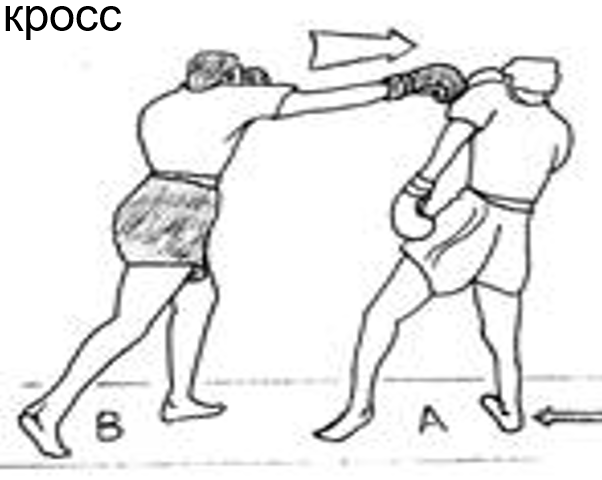
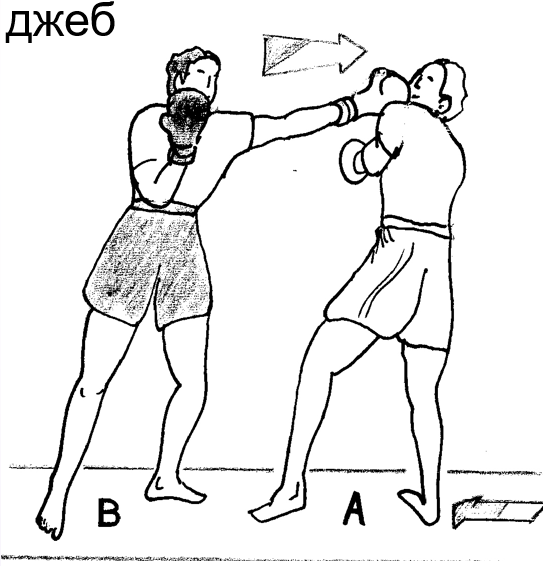
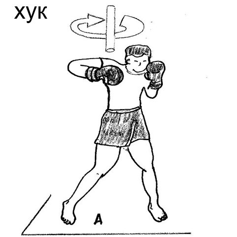
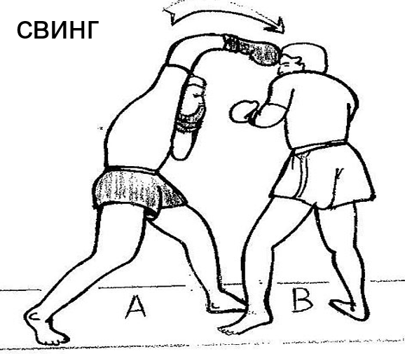
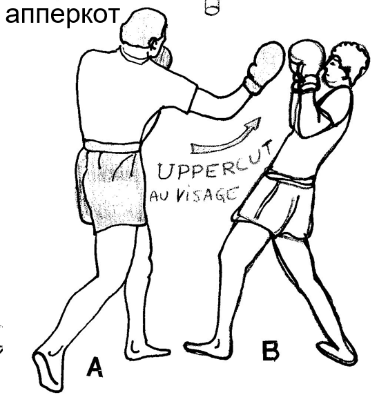

Техника бокса
Прямые удары


Джеб — это технический прием в боевых искусствах, представляющий собой короткий, прямой удар, осуществляемый
без предварительного размаха и характеризующийся ограниченной амплитудой движения. Основная цель данного
приема заключается в том, чтобы удерживать соперника на безопасном расстоянии или создавать благоприятные
условия для последующей атаки, обеспечивая при этом эффективное использование техники и стратегии в
спортивных поединках или ситуациях борьбы.
Кросс — это техника удара в боевых искусствах, характеризующаяся использованием дальней руки. Ее выполнение
начинается с активного движения задней ноги и передачи веса на переднюю ногу. В процессе выполнения кросса
плечо активно участвует в движении, что существенно увеличивает силу удара. Этот прием обычно используется
для нанесения мощных и точных ударов на дистанции, требуя от бойца точной координации тела и эффективной
передачи энергии в момент контакта.
Боковые удары

Хук — это боковой удар, характерный для техники бокса. При исполнении этого приема рука находится в
изогнутом положении, создавая угловое движение от боковой части тела. Хук применяется в основном на средней,
а чаще всего на ближней дистанции, где его эффективность зависит от корректного угла изгиба согнутой руки —
оптимальный угол составляет 90 градусов. Этот прием направлен на моментальное поражение противника, требует
точности в координации движений и обеспечивает эффективное использование момента близкого контакта в боевых
ситуациях.

Свинг – Это удар с замахом распрямленной рукой. Его выполнение является опасным для обоих боксеров,
поскольку сам удар несет в себе невероятную мощь, но при этом делает крайне уязвимым боксера, который
его пытается нанести. Рука описывает большой радиус, что дает много времени для ухода из-под удара. Как
правило, свинги наносят боксеры на фоне усталости или в момент, когда соперник потрясен и его нужно
добить.

Апперкот — это техника удара, при которой согнутая рука направляется вверх, нанося удар снизу. Этот прием
эффективно используется в ситуациях ближнего контакта или в комбинации с другими ударами, что делает его
универсальным в тактическом применении. При выполнении апперкота ключевым моментом является точное
позиционирование согнутой руки, обеспечивающее максимальную силу удара и эффективность в поражении
соперника. Этот прием отличается своей маневренностью и способностью адаптироваться к различным боевым
сценариям.